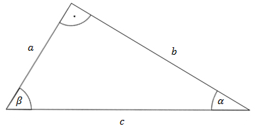

Twierdzenie 1.
Funkcje trygonometryczne kąta ostrego w trójkącie prostokątnym
są
dodatnie.
Uzasadnienie:
Funkcje trygonometryczne kątów ostrych w trójkącie prostokątnym obliczamy
jako stosunki odpowiednich boków danego trójkąta. Boki trójkąta mają zawsze długość dodatnią,
zatem ich stosunki również są dodatnie.
Twierdzenie 2.
Tangens i cotangens są swoimi odwrotnościami, czyli: \[\operatorname{ctg}
\alpha =\frac{1}{\operatorname{tg} \alpha}\] albo inaczej: \[\operatorname{tg} \alpha \cdot
\operatorname{ctg} \alpha =1\]
Twierdzenie 3.
Dla trójkąta prostokątnego:  mamy: \[\begin{split} \sin \alpha = \cos \beta\\ \cos \alpha
= \sin \beta\\ \operatorname{tg} \alpha = \operatorname{ctg} \beta\\ \operatorname{ctg} \alpha =
\operatorname{tg} \beta \end{split}\]
Uzasadnienie:
Korzystając bezpośrednio z definicji funkcji trygonometrycznych otrzymujemy:
\[\begin{split} &\sin{\alpha }=\frac{a}{c}\qquad \qquad &\cos{\alpha }=\frac{b}{c}\\[10pt]
&\text{tg}{\alpha }=\frac{a}{b}\qquad \qquad &\text{ctg}{\alpha }=\frac{b}{a} \end{split}\]
oraz: \[\begin{split}&\\&\sin{\beta }=\frac{b}{c}\qquad \qquad &\cos{\beta
}=\frac{a}{c}\\[10pt]&\text{tg}{\beta }=\frac{b}{a}\qquad \qquad &\text{ctg}{\beta
}=\frac{a}{b}\end{split}\] Zatem mamy: \[\sin \alpha = \frac{a}{c}=\cos \beta\\\cos \alpha =
\frac{b}{c}=\sin \beta\\\operatorname{tg} \alpha = \frac{a}{b} = \operatorname{ctg}
\beta\\\operatorname{ctg} \alpha =\frac{b}{a} = \operatorname{tg} \beta\]
Twierdzenie 4.
W trójkącie prostokątnym: mamy: \[\beta= 90^\circ - \alpha\] Zatem: \[\sin \alpha =
\cos (90^\circ - \alpha)\\\cos \alpha = \sin (90^\circ - \alpha)\\\operatorname{tg} \alpha =
\operatorname{ctg} (90^\circ - \alpha)\\\operatorname{ctg} \alpha = \operatorname{tg} (90^\circ -
\alpha)\] Powyższe wzory to są tzw. wzory redukcyjne dla kąta 90° - α. Otrzymaliśmy
je bezpośrednio z równości podanych w Twierdzeniu 3.